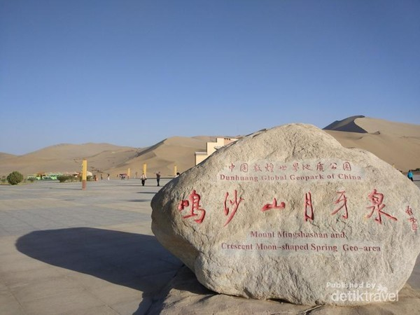

China Juga Punya Oasis di Tengah Gurun

Gurun tak hanya dimiliki oleh negara Timur Tengah saja. Di China juga ada oasis lengkap dengan bangunan khas Tiongkok di tengah gurun.
Yue ya quan atau Crescent Lake merupakan danau berbentuk bulan sabit yang berada ada di Gurun Gobi. Letaknya kurang lebih 6 km dari pusat Kota Dun Huang.
Menurut beberapa sumber, oasis ini sudah berumur lebih dari 2000 tahun dan sampai sekarang danaunya tidak pernah kering. Konon tempat ini sudah menjadi tempat wisata yang terkenal sejak zaman Dinasti Han.
Jika pergi ke Kota Tua Dun Huang, selain menikmati indahnya Mogao Caves jangan lupa untuk mengunjungi Yue Ya Quan atau danau bulan sabit.
Danau ini tidak jauh dari pusat kota, jika naik taksi dari pusat kota kita hanya perlu membayar sekitar 30 RMB (Rp 65 ribu).
Harga tiket untuk masuknya sendiri sekitar 110 RMB (Rp 239 ribu) untuk bulan Mei-Oktober dan 55 RMB (Rp 119 ribu) untuk November sampai April.
Bulan Juni dan Juli merupakan waktu terbaik untuk berkunjung. Saat mengunjungi danau ini pilihlah waktu di pagi hari atau sore hari, karena cuaca pada siang hari akan sangat panas. Jangan lupa untuk membawa air putih agar tidak dehidrasi.
Untuk dapat melihat bentuk danau dengan lebih sempurna kita bisa naik ke Gunung Mingsha, gunung pasir yang ada di belakang danau. Jika tidak mau lelah berjalan menyusuri padang pasir, kita bisa naik unta. Jangan lupa untuk bermain seluncuran di pasir ketika berada di sini.